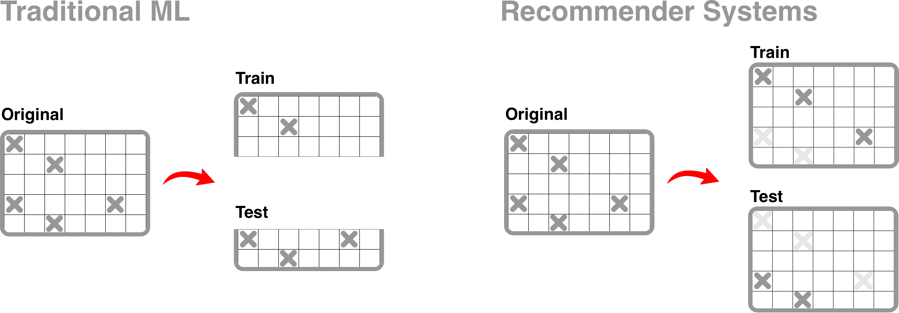

Transform¶
-
class
implicitmf.transform.Transformer(user_item_dict, full_matrix=True)¶ Transform fetched results into sparse matrix.
Parameters: - item_sub_dict (dict) – a dictionary of lists of tuples containing distinct pairs of ids, distinct user ids, and distinct item ids
- full_matrix (boolean) – Default is True. Determines whether matrix will be an “out matrix” or “in matrix”.
Variables: - user_item_score (list) – list of tuples of length three, where first item in tuple is user_id second is item_id, third is score
- user_mapper (dict) – keys are user_ids and values are indices along user axis in user item matrix
- item_mapper (dict) – keys are item_ids and values are indices along item axis in user item matrix
- user_inv_mapper (dict) – keys are indices along user axis in user item matrix and values are user_ids
- item_inv_mapper (dict) – keys are indices along item axis in user item matrix and values are item_ids
Examples
>>> from implicitmf.transform import Transformer >>> user_item_dict, _ = gen_fetched_data() >>> t = Transformer(user_item_dict) >>> X = t.to_sparse_array(arr_type='csr_matrix') ... X.shape (u, i) where u is the number of distinct users and i is the number of distinct items
-
to_sparse_array(arr_type='csr_matrix')¶ Transforms provided data into scipy sparse array
Parameters: type (str) – a string indicating type of sparse array returned (only supports csr_matrix) Returns: utility matrix of shape (u,i) where u represents number of distinct users and i represents number of distinct items Return type: scipy.sparse.csr_matrix
Pre-process¶
-
implicitmf.preprocess.normalize_X(X, norm_type)¶ Normalizes the X matrix using either tfidf or bm25. Wrapper for tfidf_weight and bm25_weight functions from the
implicit.nearest_neighboursmodule.Parameters: - X (scipy.sparse.csr_matrix) – sparse matrix of shape (n_users, n_collections)
- norm_type (str) – can be either “bm25” or tfidf
Returns: Normalized sparse csr matrix
Return type: References
[1] bm25 and tfidf explanation: https://www.benfrederickson.com/distance-metrics/ [2] https://github.com/benfred/implicit/blob/master/implicit/evaluation.pyx
Validation¶
In order to validate the performance of a recommender system, we must first split the dataset, X, into X_train and X_validate. The traditional approach to train_test_split is to split dataset X either by row or column, thus resulting in a training set and validation set of different dimensions. However, in recommendation systems, we perform train_test_split by “masking” a proportion of user-collection interactions during the training phase then calculating precision@k by comparing predicted recommendations on X_train against the original X matrix.
{kind=link}
implicitmf.validation.cross_val_folds() and implicitmf.validation.gridsearchCV()
both use the “masked-out” approach to split data.
-
implicitmf.validation.cross_val_folds(X, n_folds, seed=None)¶ Generates cross validation folds using provided utility matrix
Parameters: - X (scipy.sparse.csr_matrix) – utility matrix of shape (u, i) where u is number of users and i is number of items
- n_folds (int) – number of folds to create
- seed (int) – random seed for use by np.random.choice
Returns: dictionary of length n_folds
Return type: Example
>>> output = cross_val_folds(X, n_folds=3, seed=42) ... print(output) {0: {'train': X_train, 'test': X_test}, 1: {'train': X_train, 'test': X_test}, 2: {'train': X_train, 'test': X_test}}
-
implicitmf.validation.gridsearchCV(base_model, X, n_folds, hyperparams)¶ Performs exhaustive gridsearch cross-validation to identify the optimal hyperparemters of a model.
Parameters: - base_model (model object) –
- X (scipy.sparse.csr_matrix) –
- n_folds (int) – number of folds for cross-validation
- hyperparams (dict) – hyperparameter values of interest
Returns: dataframe with mean_score, max_score, min_score for each combination of hyperparmeter values
Return type: References
[1] scikit-learn’s GridSearchCV: https://github.com/scikit-learn/scikit-learn/blob/master/sklearn/model_selection/_search.py